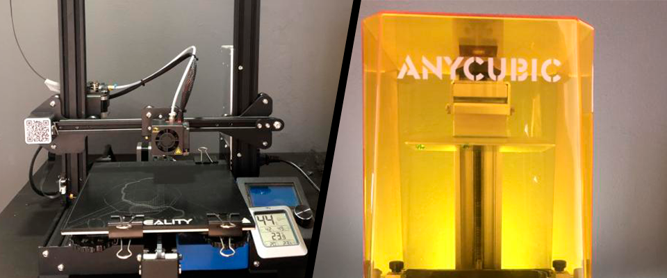

3D Printere for begyndere
3D Printere for begyndere
Ikke alle 3D printere er skabt ens, og selv blandt de billigere printere er der stadig meget stor forskel på hvad man kan få på et budget. En printer som har nogle få ekstra funktioner og et godt fællesskab kan have en stor betydning for de forskellige printere og bruger oplevelsen.
FDM printning.
FDM er den mest normale form for 3D printing som mange der ikke ved noget omkring 3D printing stadigvæk vil kunne genkende. Denne metode indebærer at man printer med plastik der bliver skubbet igennem en varmet dyse. Plastikken bliver så ekstruderet lag efter lag oven på hinanden indtil det ønskede produkt er færdig.
Nu hvor de forskellige metoder at printe på er kort blevet forklaret, er det på tide at snakke om hvilken printer fra hver metode som er god at starte med.
Creality Ender 3
Creality’s Ender serie har rigtig mange forskellige printere men deres Ender 3/Ender 3 Pro er nogle af de mest populære printere blandt nybegyndere. Dette skyldes flere funktioner som et rigtig stort print område, et stort fællesskab samt at dens gode printkvalitet ved meget lidt opsætning. Printeren er en FDM printer som også gør man kan printe med flere slags materialer som PLA, ABS, PETG og mange andre (Læs mere om printer materialer her). Printeren er meget nem at bruge efter opsætning og kræver ikke den store mængde vedligeholdelse. Selve Ender 3/3 Pro modellen er også inspiration til rigtig mange andre printere som andre vil kalde for “copycats” af creality’s ender 3/3pro. Disse copycats mangler dog alle nogle features hver i sær der ikke gør dem nær så gode i forhold til prisen.
Hvilken slags printer skal du vælge:
Hvis man gerne vil begynde at 3D printe skal man starte med at overveje hvad man vil bruge den til. Forskellige slags printere har forskellige fordele og formål. I denne artikel vil der være fokus på to slags printere som er meget populære som begynder printere. Den første type 3D printer er FDM (Fused deposition modeling) og den anden type 3D printer er SLA (Stereolithography).
SLA printning.
SLA er blevet meget populært for dens evne til at printe meget fine og detaljeret print. I Stedet for at printe med plastik bruges der her resin som bliver opbevaret i et kar. Printeren Tager derefter printpladen ned i dette kar helt ned så mellemrummet med kar og pladen er 0,1 mm. Dette efterlader et meget tyndt lag resin mellem pladen og kartes gennemsigtige bund hvor der nu kan komme UV lys igennem som vil størkne resinet. UV lyset bliver lyst igennem et filter der sørger for at resinet bliver størknet til den ønskede model. Denne proces sker så igen og igen for hvert lag indtil det ønskede produkt er færdig.
Anycubic Photon Mono
Denne printer er en SLA printer og med dens 2k opløsnings skærm, kan den producere meget præcise og detaljerede modeller. Printeren er meget nem at samle og opsætningen tager ikke meget tid. Efter man har fyldt beholderen op så skal man først gøre noget igen når den skal renses. Med sådan en printer kan du lave nogle meget små og virkelig detaljeret print som vil kræve meget fin tuning ved FDM printere. Derfor er sådan en printer meget brugbar til hvis man gerne vil lave modeller og figurer.